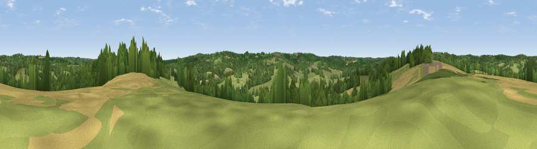

Viewpoint near Coggins Mill
#39803 in England · top 56% of its area beats it · near Coggins MillWhere it is
The exact computed spot (TQ 60775 26225). Click the marker for map links.
The view, rendered

A 360° render of this exact spot computed from the terrain model, tree cover and land cover — summer colours, afternoon light, calibrated against photographs of famous viewpoints. Real trees, hedges and buildings will differ in detail.
The panorama
Grey silhouette: terrain skyline in each direction (720 bearings, Earth curvature and refraction included). Dashed green: skyline with trees (+15 m) and buildings (+8 m) as obstacles. Blue strip: how far the ground is visible on each bearing.
Where the view opens
Wedge length = distance to the farthest visible ground on that bearing (vegetation-aware). Rings at 10, 25 and 50 km.
What fills the view
54% grassland · 32% woodland · 13% cropland ·
Angular shares of the visible panorama (visual magnitude), not map area. Landscape diversity 0.44 (0–1 Shannon).
Key numbers
More beautiful places nearby
The staircase of upgrades: each row has a higher view potential than everything closer. Driving times are estimates from straight-line distance, calibrated against real road routing — check an actual route before setting out.
| Place | Direction | Drive | Score |
|---|---|---|---|
| Viewpoint near Burwash Common | SSE · 4 km | ~8 min | 51.0 |
| Viewpoint near Argos Hill | WNW · 4 km | ~10 min | 53.0 |
| Viewpoint near Cade Street | S · 5 km | ~12 min | 56.7 |
| Viewpoint near Rushlake Green | SSE · 8 km | ~16 min | 57.4 |
| Brightling Obelisk [Brightling Down] | SE · 8 km | ~16 min | 69.1 |
| Viewpoint near Glynde | SW · 23 km | ~38 min | 70.8 |
| Cliffe Hill | SW · 23 km | ~38 min | 79.3 |
| Viewpoint near Wilmington | SSW · 23 km | ~38 min | 81.8 |
51.01294, 0.29056 · source: screening · position refined by local search. Computed location — check access rights before visiting.